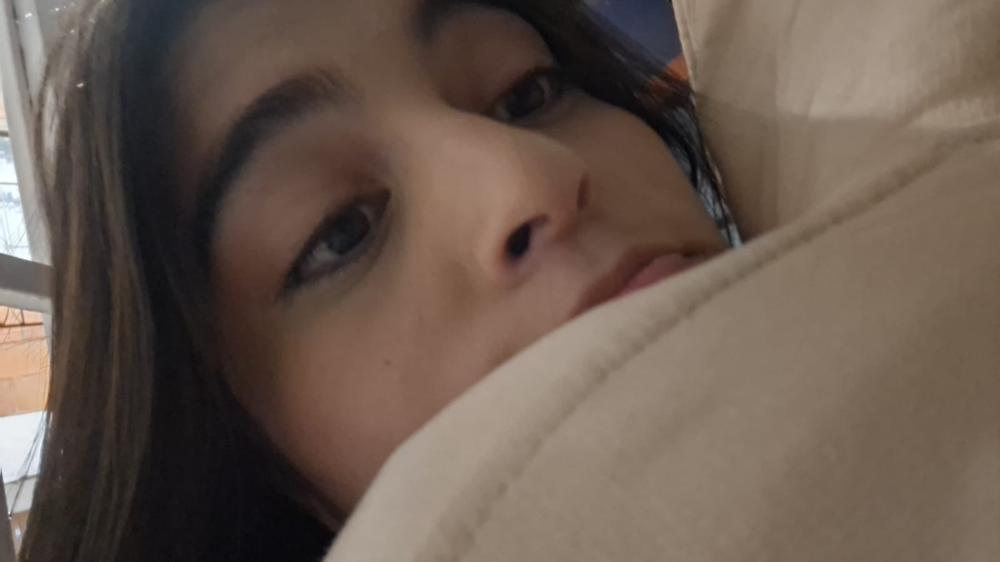
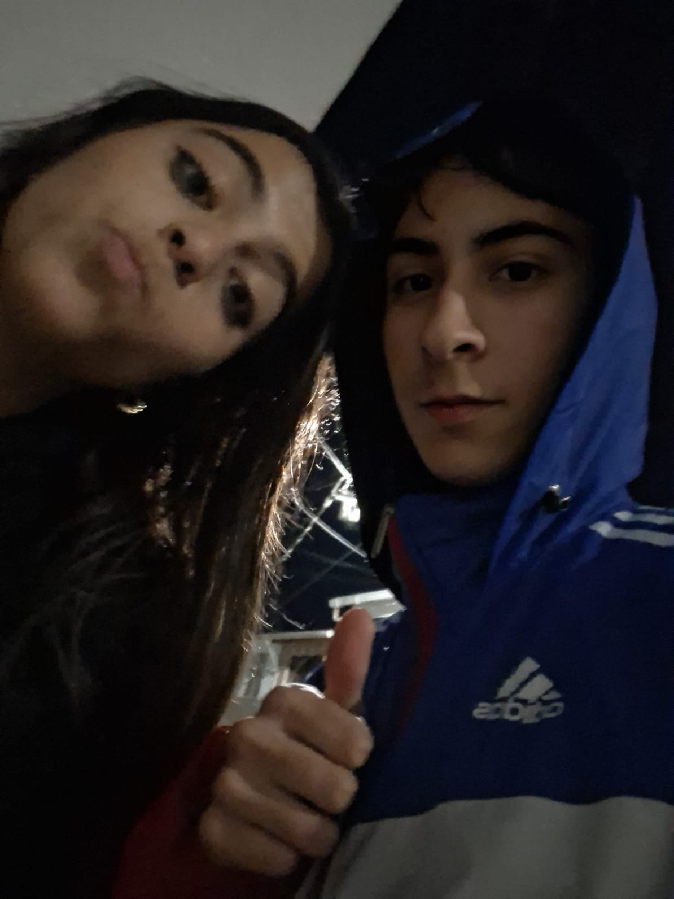

Para la niña de mis ojos
 Y ya para despedirme quisiera decirte lo mucho que te amo y lo hermosa que eres y yo se que esta no es una muy buena forma de decirtelo pero fue la que encontre más facil y me tomo mucho tiempo para poder sacar estas palabras de mi ser, pero por ti lo que sea mi chiquitina, te amo mucho hermosa.Feliz San Valentin
Y ya para despedirme quisiera decirte lo mucho que te amo y lo hermosa que eres y yo se que esta no es una muy buena forma de decirtelo pero fue la que encontre más facil y me tomo mucho tiempo para poder sacar estas palabras de mi ser, pero por ti lo que sea mi chiquitina, te amo mucho hermosa.Feliz San Valentin
Hoy escribo esta carta para la mujer más maravillosa y hermosa que yo he podido encontrar en mi corta vida y quiero decirte que el poco tiempo que llevamos juntos he podido entender que lo bueno siempre tarda y que con usted lo tengo todo, tu me entiendes, me ayudas, me amas y lo más importante es que siempre estas ahí para mi
Aun recuerdo esa primera vez que salimos juntos, que yo llegue con mi skate y con una lata de fourloko, bien nervioso al ver tal hermosura sentada esperandome, y que cuando salimos de ahí no sabia para donde llevarte pero de alguna manera encontramos el lugar perfecto para tener nuestra primer cita y fue lo mejor de ese dia sin duda, al ver esos ojitos lindos mirandome por primera vez.
Tengo muchos recuerdos hermosos con tigo que me podria quedar toda la noche y el dia y aun así me faltaria tiempo, pero lo importante es que te tengo a ti;y aunque estemos pasando por algo muy complicado y que no podamos estar juntos yo se que vamos a lograrlo juntos por que nos tengo fe a los 2, y a ti te veo para mi futuro y mi presente, tu ya tienes un gran espacio en mi corazon.Y ya para despedirme quisiera decirte lo mucho que te amo y lo hermosa que eres y yo se que esta no es una muy buena forma de decirtelo pero fue la que encontre más facil y me tomo mucho tiempo para poder sacar estas palabras de mi ser, pero por ti lo que sea mi chiquitina, te amo mucho hermosa.Feliz San Valentin